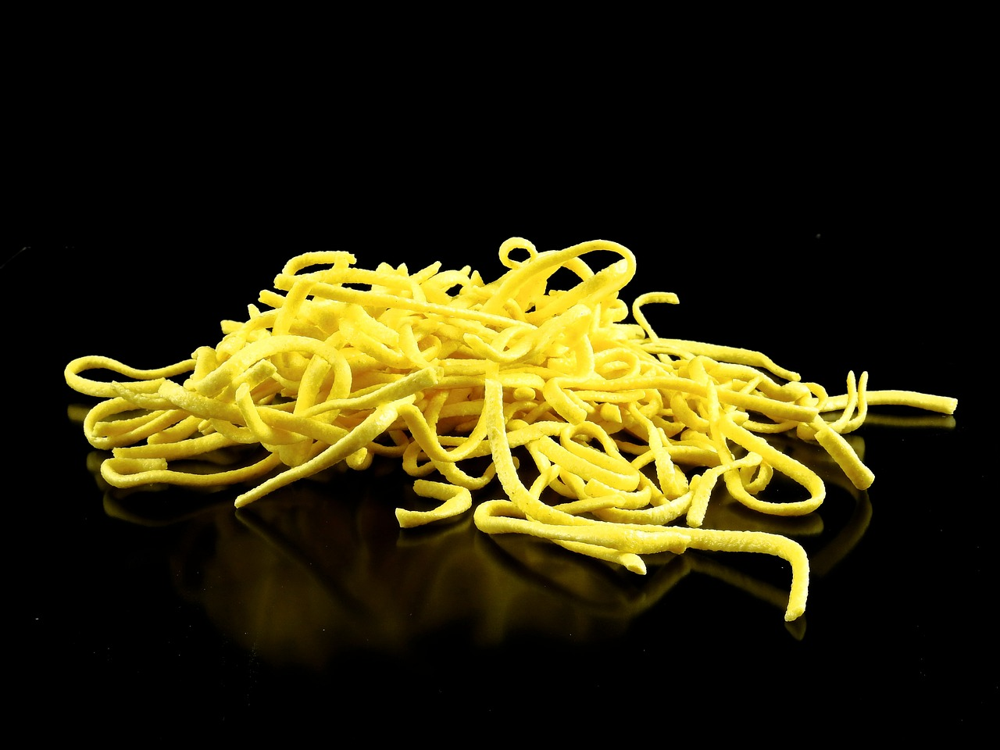

Egg Noodle Recipe
History
Egg noodles are commonly recognized to have originated in China.
They were easy to make because they are made up of eggs and flour.
The oldest known specimen of an egg noodle was found in China in 2005.
The noodle was estimated to be around 4000 years old. No one knows who invented egg noodles or when they were invented, but it has been a staple in many cultures for centuries.
German, Turkish, and Asian are some examples of cuisines that use egg noodles often.
Ingredients
- 2 cups flour
- 3 large eggs
- 2 tablespoons olive oil
- 1 teaspoon salt
- 2 tablespoons water
Directions
- Gather all ingredients.
- Mix flour, eggs, olive oil, and salt in a bowl until combined. Add water, 1 teaspoon at a time, to flour mixture until a smooth, thick dough forms.
- Turn dough out onto a lightly floured work surface and knead for 10 minutes. Let dough rest for 5 to 10 minutes.
- Divide dough into 8 balls; use a pasta machine to roll and cut dough into desired pasta shape.

Source: Bru-nO. Noodles. 2016. https://pixabay.com/photos/noodles-spaetzle-dessert-egg-batter-1581950/
Source:https://www.allrecipes.com/recipe/241920/easy-homemade-pasta-dough/